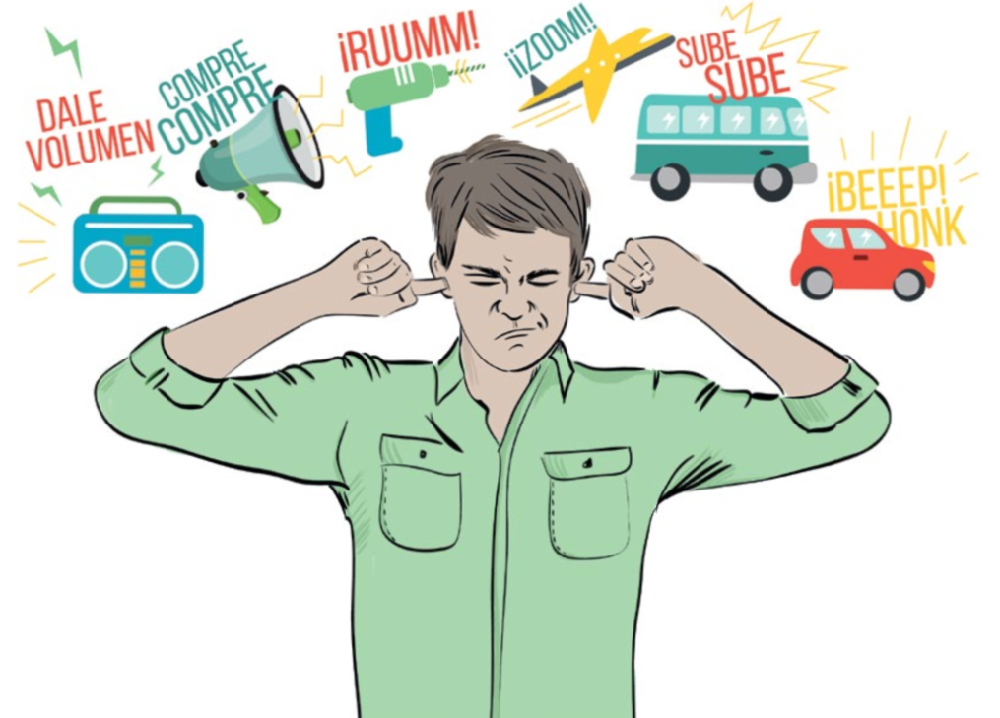

Causas de la contaminación
La contaminación acústica puede proceder de múltiples fuentes, pero a continuación repasamos las principales:
Tráfico automovilístico:
El principal foco de ruido en las ciudades es el generado por los automóviles. Por ejemplo, el claxon de un coche produce 90 db y el de un autobús 100 dB.
Tráfico aéreo:
El número de aviones que sobrevuelan una ciudad es inferior al de coches, pero su impacto es mayor: uno de estos aparatos produce 130 db.
Obras de construcció:
La construcción de un nuevo edificio, un nuevo parking o el reasfaltado de una acera provoca ruido. Por ejemplo, un martillo neumático suena a 110 dB
Restauración y ocio nocturno:
Los bares, los restaurantes y las terrazas que se montan en el exterior cuando llega el buen tiempo pueden llegar a superar los 110 dB. En este apartado también entraría el ruido de pubs y discotecas
Actividades industriales:
Las máquinas también son generadoras de ruido, lo cual al ser constante y a un nivel alto, puede afectar el la audición de los trabajadores.
Centros de diversión:
La música en un alto nivel y en situaciones prolongadas puede ser causante de diversos problemas auditivos
Consecuencias
El ruido es más dañino de lo que parece y puede generar una gran variedad de consecuencias que van desde tipo fisiológicos y psicológicos hasta sociológicos. Algunos son:
Efectos físicos:
Uno de los principales efectos es la socioacusia, que es un daño leve al sistema auditivo y se identifica con la aparición de un pitido constante luego de haberlo sometido a altos niveles sonoros. Este efecto suele pasar en varios días, pero el abuso de estas condiciones conducirá a la disminución de la capacidad auditiva y eventualmente a la sordera.
Efectos psicológicos:
Los ruidos pueden ser altamente dañinos para la salud mental y emocional de las personas, algunas consecuencias puede ir desde insomnio, fatiga, estrés, malestar, irritabilidad hasta llegar a enfermedades como ansiedad y depresión.
Sociológicos:
La falta de un sistema auditivo óptimo, se puede propiciar que exista una interferencia comunicativa. Al no poder discernir unos sonidos de otros, puede ser complicado la comunicación en un espacio abierto y congestionado.
También puede hacer que niños y niñas a edad muy temprana tengan problemas de aprendizaje, como también de comunicación.
Solucion de problemas
A pesar de la consideración mundial por los daños que produce el ruido, la ignorancia sobre el tema es alarmante. Esta falta de visibilidad directa no solo provoca ignorancia, sino también costumbre.
Las acciones tomadas por los gobiernos para mejorar la situación son mínimas en términos de creación, implementación y seguimiento de políticas públicas. Pero hay algunas acciones que individualmente se pueden realizar para evitar la contaminación acústica:
Aunque todos somos responsables del ruido que generamos, existen algunas causas muy comunes que no podemos elegir el nivel del sonido, como son:
- Si tienes que usar equipos de sonido, baja el volumen.
- No grites en lugares públicas, a menos que la situación lo merite.
- Si estás trabajando en un área donde hay ruidos fuertes, usa tapones de oído o auriculares.
- Solicita que bajen la música en los lugares públicos cuando la consideres muy elevada.